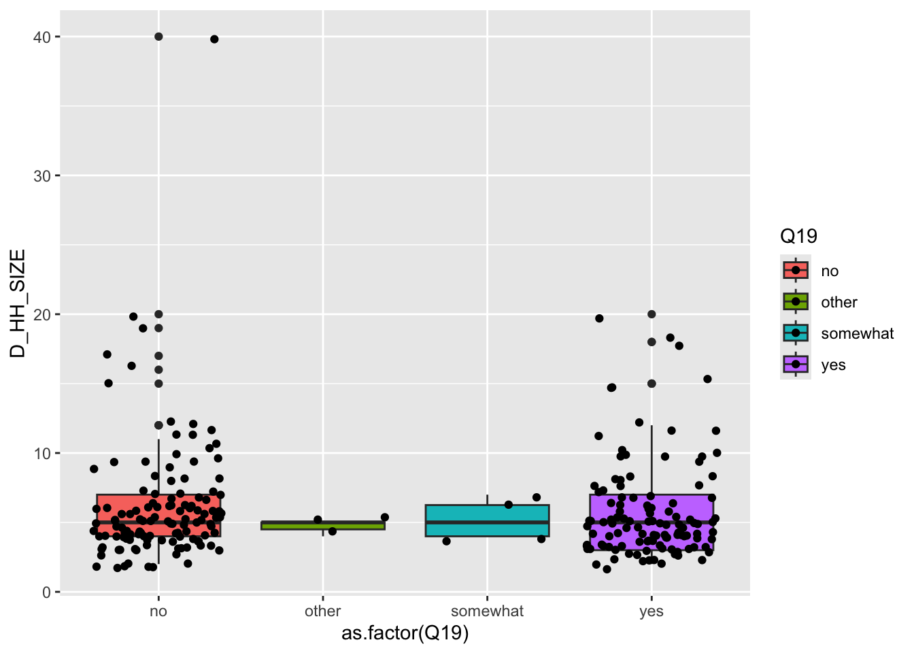
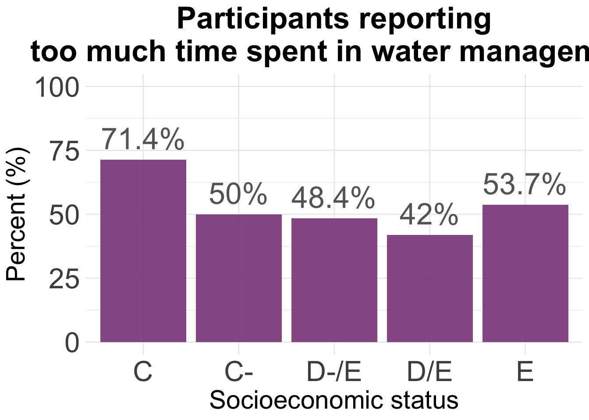
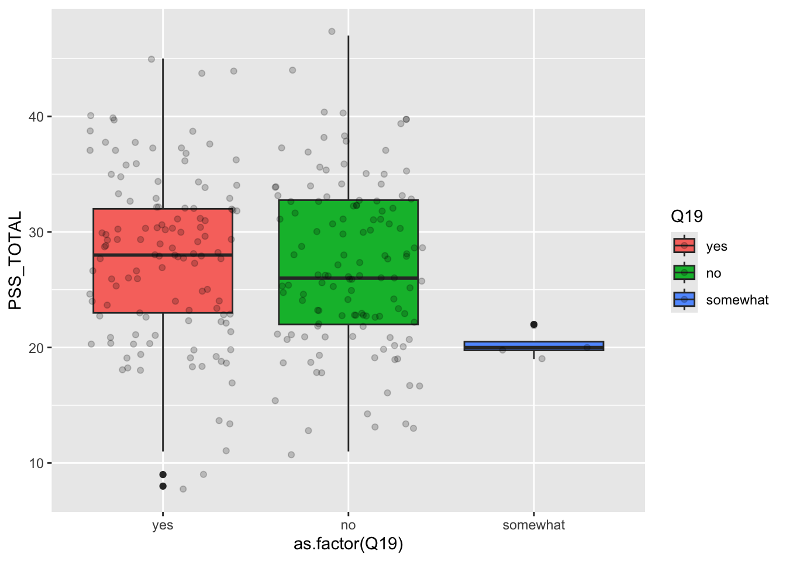
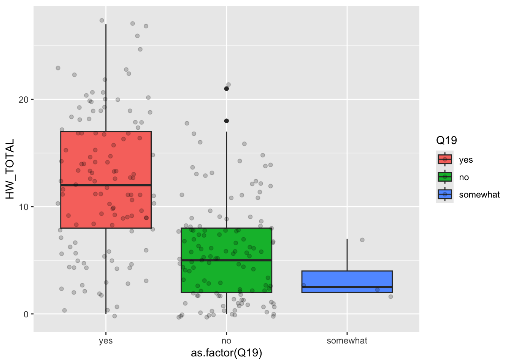
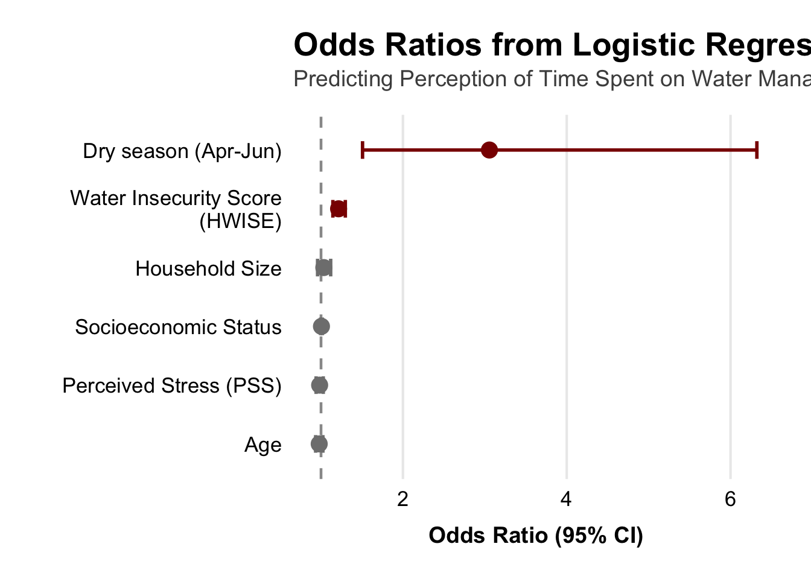
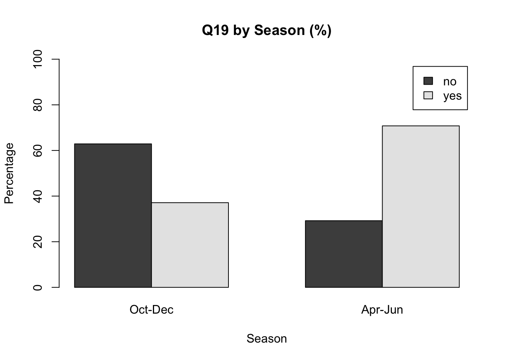
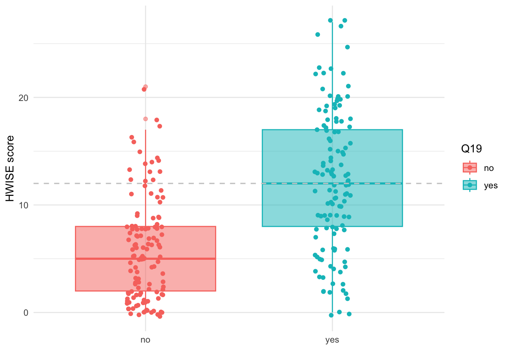
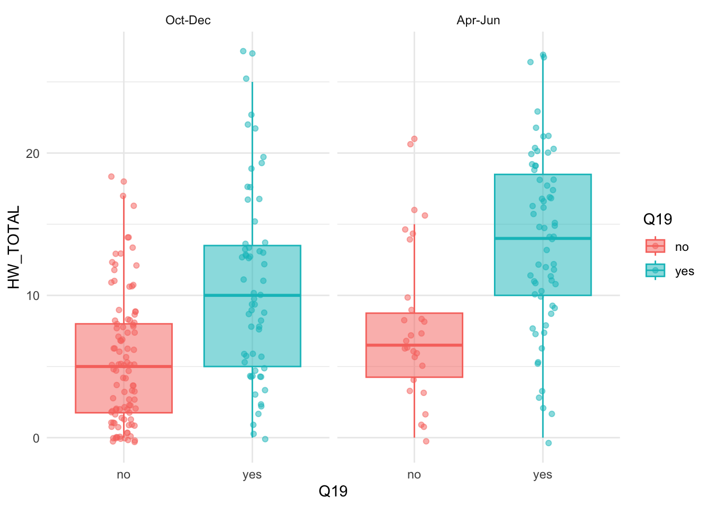
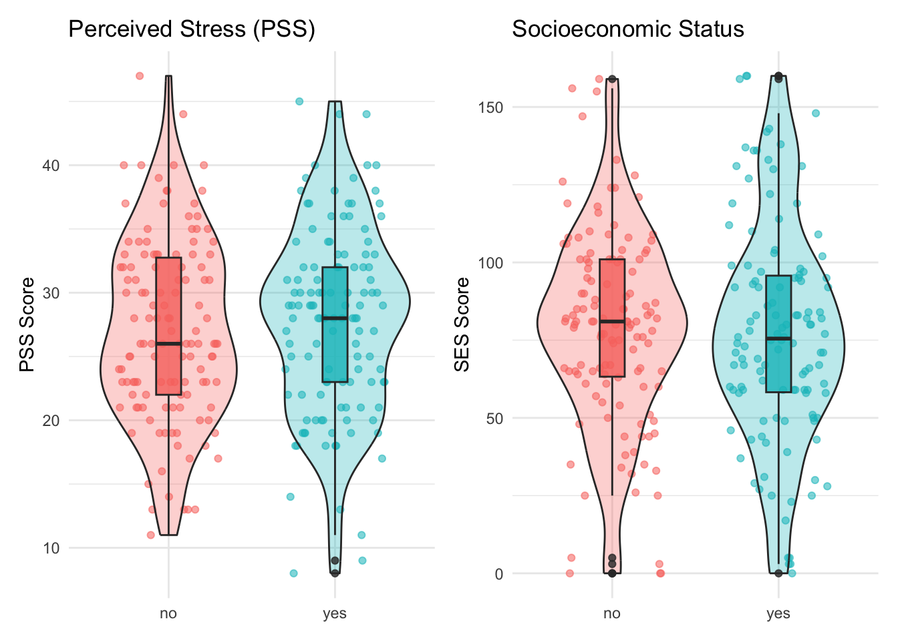
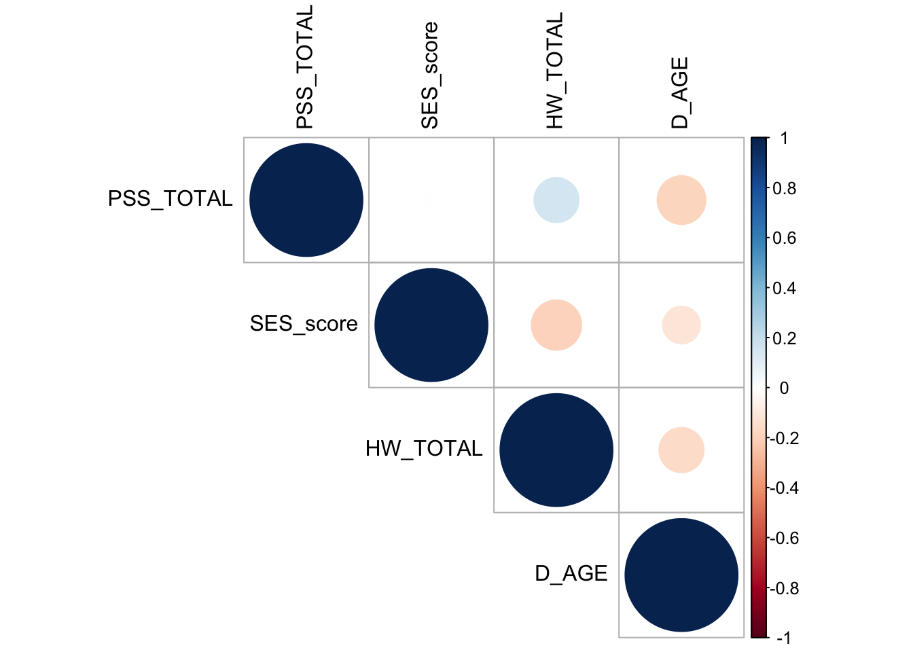

Last updated: 2026-02-18
Checks: 6 1
Knit directory: QUAIL-Mex/
This reproducible R Markdown analysis was created with workflowr (version 1.7.1). The Checks tab describes the reproducibility checks that were applied when the results were created. The Past versions tab lists the development history.
The R Markdown is untracked by Git. To know which version of the R
Markdown file created these results, you’ll want to first commit it to
the Git repo. If you’re still working on the analysis, you can ignore
this warning. When you’re finished, you can run
wflow_publish to commit the R Markdown file and build the
HTML.
Great job! The global environment was empty. Objects defined in the global environment can affect the analysis in your R Markdown file in unknown ways. For reproduciblity it’s best to always run the code in an empty environment.
The command set.seed(20241009) was run prior to running
the code in the R Markdown file. Setting a seed ensures that any results
that rely on randomness, e.g. subsampling or permutations, are
reproducible.
Great job! Recording the operating system, R version, and package versions is critical for reproducibility.
Nice! There were no cached chunks for this analysis, so you can be confident that you successfully produced the results during this run.
Great job! Using relative paths to the files within your workflowr project makes it easier to run your code on other machines.
Great! You are using Git for version control. Tracking code development and connecting the code version to the results is critical for reproducibility.
The results in this page were generated with repository version b136ca6. See the Past versions tab to see a history of the changes made to the R Markdown and HTML files.
Note that you need to be careful to ensure that all relevant files for
the analysis have been committed to Git prior to generating the results
(you can use wflow_publish or
wflow_git_commit). workflowr only checks the R Markdown
file, but you know if there are other scripts or data files that it
depends on. Below is the status of the Git repository when the results
were generated:
Ignored files:
Ignored: .DS_Store
Ignored: .RData
Ignored: .Rhistory
Ignored: .Rproj.user/
Ignored: analysis/.DS_Store
Ignored: analysis/.RData
Ignored: analysis/.Rhistory
Ignored: analysis/Hrs_by_HWISE score.png
Ignored: analysis/figure/
Ignored: analysis/odds_ratio_plot.png
Ignored: analysis/stacked_barplot.png
Ignored: code/.DS_Store
Ignored: data/.DS_Store
Untracked files:
Untracked: Time_by_SES.png
Untracked: analysis/Data_cleaning.Rmd
Untracked: analysis/Plots_Latinx_2026.Rmd
Untracked: analysis/Q14-19-20-21.R
Untracked: data/Q14-19-20-21_Alice.csv
Untracked: data/Q14-19-20-21_Jocelyne.csv
Untracked: data/Q19_combined.csv
Untracked: data/Q19_consensus.csv
Unstaged changes:
Deleted: HLTH_counts_by_SES.png
Deleted: analysis/HBA2025_cleaning.Rmd
Modified: analysis/Regression-Analysis_PC.Rmd
Modified: data/00.Metadata-25-Feb-20.docx
Modified: odds_ratio_plot.png
Deleted: violin_plot.png
Note that any generated files, e.g. HTML, png, CSS, etc., are not included in this status report because it is ok for generated content to have uncommitted changes.
There are no past versions. Publish this analysis with
wflow_publish() to start tracking its development.
#Loading file and setting empty cells as "NAs"
d <- read.csv("./data/01.SCREENING.csv", stringsAsFactors = TRUE, na.strings = c("", " ","NA", "N/A"))
# extract duplicates and compare values (removed manually for now)
dup <- d$ID[duplicated(d$ID)]
length(dup) # 38[1] 138#print(dup)
# remove duplicates
d <- d[!duplicated(d$ID),]
# confirm total number of participants
length(unique(d$ID)) # 433 rows, but 394 participants[1] 399# What numbers are missing?
ID <- as.ordered(d$ID)
# first trip
setdiff(1:204, ID)[1] 71 164nrow(d[d$ID <=250,])[1] 202# second trip
setdiff(301:497, ID)integer(0)nrow(d[d$ID >=250,])[1] 197nrow(d)[1] 399 #make ID number the row names
rownames(d) <- d$ID
# Code NAs
d[d=='NA'] <- NA
d <- d %>%
replace_na()
# Count rows with NAs
nrow(d[rowSums(is.na(d)) > 0,]) # 12 rows[1] 399nrow(d[!complete.cases(d),]) # 12 rows[1] 399#NAs <- d[rowSums(is.na(d))> 0,]
#write.table(NAs, "240301_SES_Age_NAs.csv", row.names=FALSE)
names(d) [1] "ID" "D_YRBR" "D_AGE" "D_LOC"
[5] "D_LOC_CODE" "D_LOC_TIME" "D_LOC_INFO" "HLTH_SMK"
[9] "HLTH_TTM" "HLTH_MED" "HLTH_CPAIN" "HLTH_CPAIN_CAT"
[13] "HLTH_CDIS" "HLTH_CDIS_CAT" "D_HH_SIZE" "D_HH_SIZE_INFO"
[17] "D_CHLD" "D_EMP_TYPE" "D_EMP_DAYS" "W_HH_SIZE"
[21] "W_STORAGE" "D_INFO" "SES_EDU_CAT" "SES_EDU_SC"
[25] "SES_BTHR_CAT" "SES_BTHR_SC" "SES_CAR_CAT" "SES_CAR_SC"
[29] "SES_INT_CAT" "SES_INT_SC" "SES_WRK_CAT" "SES_WRK_SC"
[33] "SES_BEDR_CAT" "SES_BEDR_SC" "SES_INFO" # Select useful information
d <- d %>%
select(ID, D_YRBR, D_AGE, D_LOC, HLTH_CPAIN, HLTH_CPAIN_CAT,HLTH_CDIS, HLTH_CDIS_CAT, D_HH_SIZE, D_CHLD, D_EMP_TYPE, W_HH_SIZE, SES_EDU_CAT, SES_EDU_SC, SES_BTHR_CAT, SES_BTHR_SC, SES_CAR_CAT, SES_CAR_SC, SES_INT_CAT, SES_INT_SC, SES_WRK_CAT, SES_WRK_SC, SES_BEDR_CAT, SES_BEDR_SC)
d <- d %>%
mutate(across(starts_with("SES") & ends_with("SC"), as.numeric)) %>%
mutate(SES_score = rowSums(select(., starts_with("SES") & ends_with("SC")), na.rm = TRUE))
# transform factors to numbers
for (i in c(2:length(d))) {
d[,i] <- as.numeric(as.character(d[,i]))
}Warning: NAs introduced by coercion
Warning: NAs introduced by coercion
Warning: NAs introduced by coercion
Warning: NAs introduced by coercion
Warning: NAs introduced by coercion
Warning: NAs introduced by coercion
Warning: NAs introduced by coercion
Warning: NAs introduced by coercion
Warning: NAs introduced by coercion
Warning: NAs introduced by coercion
Warning: NAs introduced by coercion
Warning: NAs introduced by coercion
Warning: NAs introduced by coercion
Warning: NAs introduced by coercion##### PREPING Q19
time <- time %>%
select(SampleID, Consensus) %>%
mutate()
colnames(time) <- c("ID", "Q19")
# SES categories
d$SES <- ifelse(d$SES_score <= 47,"E",
ifelse(d$SES_score <= 89, "D-/E",
ifelse(d$SES_score <= 111, "D/E",
ifelse(d$SES_score <= 135, "C-",
ifelse(d$SES_score <= 165, "C",
ifelse(d$SES_score <= 204, "C+",
"A/B"))))))
d %>%
group_by(SES) %>%
summarise(n_total = n())# A tibble: 5 × 2
SES n_total
<chr> <int>
1 C 21
2 C- 38
3 D-/E 191
4 D/E 83
5 E 66m <- merge(d,time, by="ID")
dim(m)[1] 256 27m[m =='NA'] <- NA
m <- m %>%
replace_na()
m %>%
group_by(SES) %>%
summarise(n_total = n())# A tibble: 5 × 2
SES n_total
<chr> <int>
1 C 15
2 C- 21
3 D-/E 128
4 D/E 50
5 E 42ggplot(m, aes(x = as.factor(Q19), y = D_HH_SIZE, fill = Q19)) +
geom_boxplot() +
geom_jitter()Warning: Removed 13 rows containing non-finite outside the scale range
(`stat_boxplot()`).Warning: Removed 13 rows containing missing values or values outside the scale range
(`geom_point()`).
agg <- count(m, SES, Q19)
agg2 <- pivot_wider(agg,
names_from = Q19,
values_from = n)
agg2$Total <- agg2$yes/(agg2$yes + agg2$no)*100
#png(file= "Time_by_SES.png", width = 700, height = 800 )
#
ggplot(agg2, aes(x = SES, y = Total)) +
geom_bar(stat= "identity", fill = "orchid4", alpha = 0.9) +
ylim(0, 100) +
theme_minimal() +
geom_text(aes(label = paste(round(Total, 1), "%", sep="")),
vjust = -0.5,
colour = "gray40",
size = 9) +
theme(
plot.title = element_text(hjust = 0.5,
size = 26, face = "bold"),
axis.title = element_text(size = 22),
axis.text = element_text(size = 24)
) +
labs(title="Participants reporting\n too much time spent in water management") +
xlab("Socioeconomic status") +
ylab("Percent (%)") 
#dev.off()f<-read.csv("./data/02.HWISE_PSS.csv")
# Add more info to file
dim(f)[1] 398 33f$ID <- as.factor(f$ID)
pss <- f %>%
mutate(across(c(PSS4, PSS5, PSS6, PSS7, PSS9, PSS10, PSS13),
~recode(., `0` = 4L, `1` = 3L, `3` = 1L, `4` = 0L, .default = .))) %>%
select(!PSS_INFO & !HW_INFO) %>%
mutate(across(starts_with("PSS"), as.numeric)) %>%
mutate(PSS_TOTAL = rowSums(select(., starts_with("PSS")), na.rm = TRUE)) %>%
mutate(across(starts_with("HW"), as.numeric)) %>%
mutate(HW_TOTAL = rowSums(select(., starts_with("HW")), na.rm = TRUE)) Warning: There was 1 warning in `mutate()`.
ℹ In argument: `across(starts_with("PSS"), as.numeric)`.
Caused by warning:
! NAs introduced by coercionnames(pss) [1] "ID" "SEASON" "W_WS_LOC" "HW_TOTAL" "HW_WORRY"
[6] "HW_INTERR" "HW_CLOTHES" "HW_PLANS" "HW_FOOD" "HW_HANDS"
[11] "HW_BODY" "HW_DRINK" "HW_ANGRY" "HW_SLEEP" "HW_NONE"
[16] "HW_SHAME" "PSS1" "PSS2" "PSS3" "PSS4"
[21] "PSS5" "PSS6" "PSS7" "PSS8" "PSS9"
[26] "PSS10" "PSS11" "PSS12" "PSS13" "PSS14"
[31] "PSS_TOTAL" # Calculate total score PSS per participant
summary(pss$PSS_TOTAL) Min. 1st Qu. Median Mean 3rd Qu. Max.
8.00 22.00 28.00 27.16 32.00 47.00 pss <- merge(m,pss, by="ID")
dim(pss)[1] 255 57pss[pss =='NA'] <- NA
levs <- c("yes", "no", "somewhat", "other")
pss <- pss %>%
filter(Q19 != "other") %>%
mutate(Q19 = factor(Q19, levels = levs))
ggplot(pss, aes(x = as.factor(Q19), y = PSS_TOTAL, fill = Q19)) +
geom_boxplot() +
geom_jitter(alpha= 0.2)
ggplot(pss, aes(x = as.factor(Q19), y = HW_TOTAL, fill = Q19)) +
geom_boxplot() +
geom_jitter(alpha= 0.2)
# Sample dataframe (assumes it's already loaded as `data`)
data <- pss %>%
filter(Q19 != "somewhat")
data$Q19 <- factor(data$Q19, levels = c("no", "yes"))
data$SEASON <- factor(data$SEASON, levels = c("Oct-Dec", "Apr-Jun"))
# Model 1: Overall SES score
m1 <- glm(Q19 ~ SES_score, data = data, family = "binomial")
# Model 2: Overall SES category
m3 <- glm(Q19 ~ HW_TOTAL, data = data, family = "binomial")
# Model 4: PSS
m4 <- glm(Q19 ~ PSS_TOTAL, data = data, family = "binomial")
m5 <- glm(Q19 ~ W_WS_LOC, data = data, family = "binomial")
m6 <- glm(Q19 ~ D_AGE, data = data, family = "binomial")
m7 <- glm(Q19 ~ D_HH_SIZE, data = data, family = "binomial")
m8 <- glm(Q19 ~ D_CHLD, data = data, family = "binomial")
m9 <- glm(Q19 ~ SEASON, data = data, family = "binomial")
m10 <- glm(Q19 ~ SEASON + HW_TOTAL + PSS_TOTAL + D_AGE + SES_score + D_HH_SIZE,
data = data, family = "binomial")
m11 <- glm(Q19 ~ HW_TOTAL + SEASON,
data = data, family = "binomial")
aic_table <- AIC(m1, m3, m4, m5, m6, m7, m8, m9, m10, m11) %>%
as.data.frame() %>%
arrange(AIC)Warning in AIC.default(m1, m3, m4, m5, m6, m7, m8, m9, m10, m11): models are
not all fitted to the same number of observationsprint(aic_table) df AIC
m10 7 257.2509
m11 3 273.0210
m3 2 278.9145
m9 2 321.2494
m8 2 326.1145
m7 2 328.9014
m6 2 339.7016
m4 2 347.1831
m5 2 347.3356
m1 2 347.5969m10
Call: glm(formula = Q19 ~ SEASON + HW_TOTAL + PSS_TOTAL + D_AGE + SES_score +
D_HH_SIZE, family = "binomial", data = data)
Coefficients:
(Intercept) SEASONApr-Jun HW_TOTAL PSS_TOTAL D_AGE
-1.515890 1.117153 0.194211 -0.017143 -0.022516
SES_score D_HH_SIZE
0.005347 0.033248
Degrees of Freedom: 233 Total (i.e. Null); 227 Residual
(14 observations deleted due to missingness)
Null Deviance: 324
Residual Deviance: 243.3 AIC: 257.3m11
Call: glm(formula = Q19 ~ HW_TOTAL + SEASON, family = "binomial", data = data)
Coefficients:
(Intercept) HW_TOTAL SEASONApr-Jun
-1.8798 0.1775 0.8981
Degrees of Freedom: 247 Total (i.e. Null); 245 Residual
Null Deviance: 343.7
Residual Deviance: 267 AIC: 273m3
Call: glm(formula = Q19 ~ HW_TOTAL, family = "binomial", data = data)
Coefficients:
(Intercept) HW_TOTAL
-1.7212 0.1951
Degrees of Freedom: 247 Total (i.e. Null); 246 Residual
Null Deviance: 343.7
Residual Deviance: 274.9 AIC: 278.9m9
Call: glm(formula = Q19 ~ SEASON, family = "binomial", data = data)
Coefficients:
(Intercept) SEASONApr-Jun
-0.5276 1.4127
Degrees of Freedom: 247 Total (i.e. Null); 246 Residual
Null Deviance: 343.7
Residual Deviance: 317.2 AIC: 321.2best_model <- m10 # or whichever had lowest AIC
tidy_model <- tidy(best_model, conf.int = TRUE, exponentiate = TRUE) %>%
filter(term != "(Intercept)") %>%
mutate(significant = ifelse(conf.low > 1 | conf.high < 1, "Significant", "Not Significant")) %>%
mutate(term = recode(term,
"SEASONApr-Jun" = "Dry season (Apr-Jun)",
"HW_TOTAL" = "Water Insecurity Score\n(HWISE)",
"D_HH_SIZE" = "Household Size",
"SES_score" = "Socioeconomic Status",
"PSS_TOTAL" = "Perceived Stress (PSS)",
"D_AGE" = "Age"))
ggplot(tidy_model, aes(x = reorder(term, estimate), y = estimate, color = significant)) +
geom_hline(yintercept = 1, linetype = "dashed", color = "gray60", size = 0.8) +
geom_errorbar(aes(ymin = conf.low, ymax = conf.high),
width = 0.3, size = 1) +
geom_point(size = 4) +
scale_color_manual(values = c("Significant" = "#8B0000", "Not Significant" = "gray50")) +
coord_flip() +
labs(title = "Odds Ratios from Logistic Regression",
subtitle = "Predicting Perception of Time Spent on Water Management as Excessive",
x = "",
y = "Odds Ratio (95% CI)") +
theme_minimal(base_size = 16) +
theme(
plot.title = element_text(face = "bold", size = 20, margin = margin(b = 5)),
plot.subtitle = element_text(size = 14, color = "gray30", margin = margin(b = 15)),
axis.title.x = element_text(size = 14, face = "bold", margin = margin(t = 10)),
axis.text = element_text(size = 13, color = "black"),
panel.grid.major.y = element_blank(),
panel.grid.minor = element_blank(),
plot.margin = margin(20, 20, 20, 20),
legend.position = "none",
) Warning: Using `size` aesthetic for lines was deprecated in ggplot2 3.4.0.
ℹ Please use `linewidth` instead.
This warning is displayed once every 8 hours.
Call `lifecycle::last_lifecycle_warnings()` to see where this warning was
generated.
ggsave("odds_ratio_plot.png",
width = 10,
height = 6,
dpi = 300,
bg = "white")# Summary stats by Q19 condition
data %>%
group_by(Q19) %>%
summarise(
mean_pss = mean(PSS_TOTAL, na.rm = TRUE),
sd_pss = sd(PSS_TOTAL, na.rm = TRUE),
mean_ses = mean(SES_score, na.rm = TRUE),
sd_ses = sd(SES_score, na.rm = TRUE),
mean_hwise = mean(HW_TOTAL, na.rm = TRUE),
sd_hwise = sd(HW_TOTAL, na.rm = TRUE),
mean_age = mean(D_AGE, na.rm = TRUE),
sd_age = sd(D_AGE, na.rm = TRUE),
n = n()
)# A tibble: 2 × 10
Q19 mean_pss sd_pss mean_ses sd_ses mean_hwise sd_hwise mean_age sd_age
<fct> <dbl> <dbl> <dbl> <dbl> <dbl> <dbl> <dbl> <dbl>
1 no 27.1 7.18 78.7 31.6 5.74 4.68 33.8 6.93
2 yes 27.8 7.34 77.1 35.3 12.2 6.60 31.4 7.59
# ℹ 1 more variable: n <int># Frequency table with percentages (each season = 100%)
prop.table(table(data$Q19, data$SEASON), margin = 2) * 100
Oct-Dec Apr-Jun
no 62.89308 29.21348
yes 37.10692 70.78652# Plot with percentages (each season = 100%)
barplot(prop.table(table(data$Q19, data$SEASON), margin = 2) * 100,
beside = TRUE,
legend = TRUE,
xlab = "Season",
ylab = "Percentage",
main = "Q19 by Season (%)",
ylim = c(0, 100))
ggplot(data, aes(x = Q19, y = HW_TOTAL, fill = Q19, color = Q19)) +
geom_boxplot(alpha = 0.5) +
geom_jitter(width = 0.1) +
theme_minimal() +
xlab("") + ylab("HWISE score") +
geom_hline(yintercept = 12, linetype = "dashed", color = "gray80", linewidth = 0.6)
ggplot(data, aes(y = HW_TOTAL, x= Q19, fill = Q19, color = Q19)) +
geom_boxplot(alpha = 0.5) +
geom_jitter(alpha = 0.5, width = 0.1) +
theme_minimal() +
# xlab("HWISE score") + ylab("Frequency") +
facet_wrap( ~ SEASON) 
# PSS comparison
wilcox.test(PSS_TOTAL ~ Q19, data = data)
Wilcoxon rank sum test with continuity correction
data: PSS_TOTAL by Q19
W = 7243, p-value = 0.4328
alternative hypothesis: true location shift is not equal to 0# SES comparison
wilcox.test(SES_score ~ Q19, data = data)
Wilcoxon rank sum test with continuity correction
data: SES_score by Q19
W = 8168.5, p-value = 0.3934
alternative hypothesis: true location shift is not equal to 0wilcox.test(HW_TOTAL ~ Q19, data = data)
Wilcoxon rank sum test with continuity correction
data: HW_TOTAL by Q19
W = 3307, p-value = 8.261e-15
alternative hypothesis: true location shift is not equal to 0There is a statistically significant difference in stress levels between people saying “yes” or “no”.
# Stress and SES by Q19 condition
p1 <- ggplot(data, aes(x = Q19, y = PSS_TOTAL, fill = Q19)) +
geom_point(aes(alpha = 0.8, color = Q19), position = position_dodge2(width = 0.6)) +
geom_violin(alpha = 0.3) +
geom_boxplot(alpha = 0.8, width = 0.15) +
labs(title = "Perceived Stress (PSS)", y = "PSS Score", x = NULL) +
theme_minimal() +
theme(legend.position = "none")
p2 <- ggplot(data, aes(x = Q19, y = SES_score, fill = Q19)) +
geom_point(aes(alpha = 0.8, color = Q19), position = position_dodge2(width = 0.6)) +
geom_violin(alpha = 0.3) +
geom_boxplot(alpha = 0.8, width = 0.15) +
labs(title = "Socioeconomic Status", y = "SES Score", x = NULL) +
theme_minimal() +
theme(legend.position = "none")
# Combine plots
p1 + p2
# Correlation matrix
cor_data <- data %>%
select(PSS_TOTAL, SES_score, HW_TOTAL, D_AGE) %>%
drop_na()
cor_matrix <- cor(cor_data)
corrplot(cor_matrix, method = "circle", type = "upper", tl.col = "black")
sessionInfo()R version 4.5.2 (2025-10-31)
Platform: aarch64-apple-darwin20
Running under: macOS Tahoe 26.2
Matrix products: default
BLAS: /System/Library/Frameworks/Accelerate.framework/Versions/A/Frameworks/vecLib.framework/Versions/A/libBLAS.dylib
LAPACK: /Library/Frameworks/R.framework/Versions/4.5-arm64/Resources/lib/libRlapack.dylib; LAPACK version 3.12.1
locale:
[1] en_US.UTF-8/en_US.UTF-8/en_US.UTF-8/C/en_US.UTF-8/en_US.UTF-8
time zone: America/Detroit
tzcode source: internal
attached base packages:
[1] stats graphics grDevices utils datasets methods base
other attached packages:
[1] corrplot_0.95 patchwork_1.3.1 ggpubr_0.6.1 broom_1.0.8
[5] tidyr_1.3.1 ggplot2_4.0.0 dplyr_1.1.4
loaded via a namespace (and not attached):
[1] utf8_1.2.4 sass_0.4.10 generics_0.1.3 rstatix_0.7.2
[5] stringi_1.8.7 digest_0.6.37 magrittr_2.0.3 evaluate_1.0.3
[9] grid_4.5.2 RColorBrewer_1.1-3 fastmap_1.2.0 rprojroot_2.1.1
[13] workflowr_1.7.1 jsonlite_2.0.0 backports_1.5.0 Formula_1.2-5
[17] promises_1.3.2 purrr_1.0.4 scales_1.4.0 textshaping_1.0.0
[21] jquerylib_0.1.4 abind_1.4-8 cli_3.6.4 crayon_1.5.3
[25] rlang_1.1.6 withr_3.0.2 cachem_1.1.0 yaml_2.3.10
[29] tools_4.5.2 ggsignif_0.6.4 httpuv_1.6.16 vctrs_0.6.5
[33] R6_2.6.1 lifecycle_1.0.4 git2r_0.36.2 stringr_1.5.1
[37] fs_1.6.6 car_3.1-3 ragg_1.4.0 pkgconfig_2.0.3
[41] pillar_1.10.2 bslib_0.9.0 later_1.4.2 gtable_0.3.6
[45] glue_1.8.0 Rcpp_1.0.14 systemfonts_1.2.3 xfun_0.52
[49] tibble_3.2.1 tidyselect_1.2.1 rstudioapi_0.17.1 knitr_1.50
[53] farver_2.1.2 htmltools_0.5.8.1 labeling_0.4.3 rmarkdown_2.29
[57] carData_3.0-5 compiler_4.5.2 S7_0.2.0